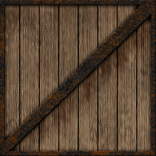

$def with (content)
$var title: 'slides'
<div class="bs-example">
<div id="carousel-example-generic" class="carousel slide">
  <!-- Indicators -->
  <ol class="carousel-indicators">
    <li data-target="#carousel-example-generic" data-slide-to="0" class="active"></li>
$for i in range(1,len(content['rows'])-1):
  <li data-target="#carousel-example-generic" data-slide-to="$i"></li>
</ol>

  <!-- Wrapper for slides -->
  <div height="400px" class="carousel-inner">
    <div class="item active">
      
      <div class="carousel-caption">
		BLAH
      </div>
    </div>
$for i in content['rows']:
  <div class="item ">
  <div class="inner-item">
  <a href="/thing/$i['id']">
  
  </a>
  <div class="carousel-caption">
  </div>
  </div>
  </div>
</div>

  <!-- Controls -->
  <a class="left carousel-control" href="#carousel-example-generic" data-slide="prev">
    <span class="icon-prev"></span>
  </a>
  <a class="right carousel-control" href="#carousel-example-generic" data-slide="next">
    <span class="icon-next"></span>
  </a>
</div>
</div>

